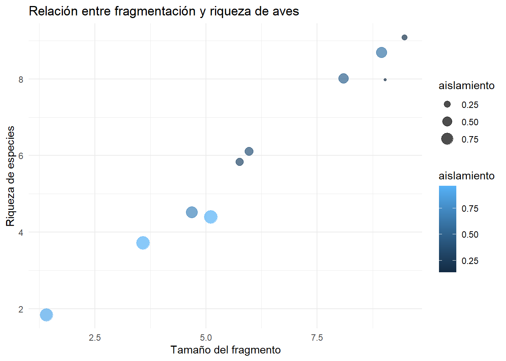

7 Capítulo 7: Diversidad en Comunidades Ecológicas
La diversidad de comunidades resume cuántas especies hay y cómo se reparten sus abundancias. Dos comunidades con la misma riqueza pueden diferir en su equitatividad: una dominada por pocas especies muy abundantes tendrá menor diversidad “efectiva” que otra con abundancias más balanceadas. Esta intuición se formaliza con índices clásicos como Shannon y medidas de equidad (por ejemplo, Pielou), que combinan información de riqueza y de distribución de abundancias para captar distintos aspectos del ensamblaje comunitario.
Más allá de la descripción, la diversidad está conectada con procesos que generan y mantienen la coexistencia: partición de nichos, efectos de densodependencia y estructura de interacciones. En modelos mecanísticos de comunidades, el modelo generalizado de Lotka–Volterra (GLV) ofrece un marco parsimonioso para representar tasas de crecimiento intrínsecas y matrices de interacción que determinan la factibilidad y estabilidad de equilibrios multiespecíficos. En términos prácticos, dados un conjunto de especies y una matriz de interacciones, la coexistencia se evalúa verificando si el equilibrio es factible (todas las abundancias positivas) y localmente estable (autovalores con parte real negativa del Jacobiano comunitario), criterios que permiten “filtrar”, entre todas las combinaciones posibles de especies, aquellas que pueden persistir juntas.
La diversidad no sólo interesa por sí misma; está vinculada al funcionamiento ecosistémico. Una línea influyente separa los efectos de la diversidad en componentes de “selección” (dominancia de especies con rasgos particulares) y de “complementariedad” (uso más completo de recursos por partición de nichos), marco que ha inspirado tanto aplicaciones como debates metodológicos recientes.
En este capítulo vamos a buscar combinar métricas de diversidad para describir comunidades, modelos GLV para estudiar factibilidad/estabilidad de conjuntos coexistenes y ver aquellas herramientas de teoría de juegos para capturar la dependencia de frecuencia que media los patrones de coexistencia y diversidad.
7.1 Índices de diversidad
7.1.1 Índice de Shannon
El índice de Shannon captura tanto la riqueza como la equidad de una comunidad: $$ H’ = - _{i=1}^S p_i (p_i)
$$ donde \(p_i\) es la proporción de la abundancia de la especie \(i\) respecto al total.
7.1.2 Índice de equitabilidad de Pielou
Este índice mide qué tan equitativa es una comunidad, normalizando el índice de Shannon por la riqueza máxima posible: $$ J’ =
$$ donde \(S\) es la riqueza de especies.
7.1.3 Cálculo en R
Ejemplo con una comunidad ficticia:
library(vegan) # Para cálculos de diversidad
# Datos de ejemplo
comunidad <- c(A = 40, B = 30, C = 20, D = 10) # Abundancias por especie
# Índice de Shannon
shannon <- vegan::diversity(comunidad, index = "shannon")
# Índice de Pielou
pielou <- shannon / log(length(comunidad))
# Resultados
cat("Índice de Shannon:", shannon, "\n")## Índice de Shannon: 1.279854## Índice de Pielou: 0.9232197Visualización de la comunidad:
comunidad_df <- tibble(
especie = names(comunidad),
abundancia = comunidad
)
ggplot(comunidad_df, aes(x = especie, y = abundancia, fill = especie)) +
geom_bar(stat = "identity") +
labs(title = "Distribución de abundancias en una comunidad",
x = "Especies", y = "Abundancia") +
theme_minimal()
7.2 Juegos evolutivos y diversidad: coexistencia y partición de nichos
La coexistencia de especies está influenciada por cómo comparten los recursos y particionan nichos. Usando el modelo de Lotka-Volterra Generalizado, podemos modelar interacciones competitivas y cómo estas afectan la diversidad.
Las ecuaciones básicas son:
\[ \frac{dx_i}{dt} = x_i \left( r_i + \sum_{j=1}^n A_{ij} x_j \right) \]
donde: - \(x_i\): abundancia de la especie \(i\). - \(r_i\): tasa intrínseca de crecimiento. - \(A_{ij}\): matriz de interacciones entre especies.
7.3 Ejemplo en R: Modelos de coexistencia bajo presión competitiva
En este ejemplo, simulamos una comunidad con 3 especies que compiten por recursos:
# Parámetros
r <- c(0.5, 0.3, 0.2) # Tasa de crecimiento
A <- matrix(c(-1, 0.5, 0.3,
0.4, -1, 0.2,
0.2, 0.3, -1), nrow = 3, byrow = TRUE) # Matriz de interacción
# Modelo de Lotka-Volterra
glv_model <- function(t, state, parameters) {
with(as.list(c(state, parameters)), {
dx1 <- x1 * (r[1] + A[1,1] * x1 + A[1,2] * x2 + A[1,3] * x3)
dx2 <- x2 * (r[2] + A[2,1] * x1 + A[2,2] * x2 + A[2,3] * x3)
dx3 <- x3 * (r[3] + A[3,1] * x1 + A[3,2] * x2 + A[3,3] * x3)
list(c(dx1, dx2, dx3))
})
}
# Condiciones iniciales
state <- c(x1 = 10, x2 = 5, x3 = 15)
time <- seq(0, 50, by = 0.1)
# Solución
out <- ode(y = state, times = time, func = glv_model, parms = list(r = r, A = A))
out <- as.data.frame(out)
# Visualización
out_long <- out %>% pivot_longer(cols = -time, names_to = "Especie", values_to = "Abundancia")
ggplot(out_long, aes(x = time, y = Abundancia, color = Especie)) +
geom_line() +
labs(title = "Dinámica de coexistencia bajo presión competitiva", x = "Tiempo", y = "Abundancia") +
theme_minimal()
7.4 Comparación entre modelos tradicionales y basados en Teoría de Juegos
Con este código lo que hacemos es comparar dos maneras distintas de modelar la dinámica de comunidades: el modelo clásico de Lotka-Volterra generalizado (GLV), que describe cómo cambian las abundancias absolutas de las especies, y un modelo de dinámica replicadora de teoría de juegos que hemos ajustado para que herede exactamente la misma estructura de interacciones que el GLV. En ambos casos calculamos, a lo largo del tiempo, la diversidad de Shannon (H’) a partir de las frecuencias relativas de las especies.
Para ello, se arma una matriz de interacción A (competencia entre especies) y un vector de crecimientos intrínsecos r. Estos son los insumos básicos del modelo de Lotka–Volterra. Luego calculamos las frecuencias relativas y con eso la diversidad de Shannon (H’). Luego obtenemos el equilibrio esperado en abundancias, lo convertimos a frecuencias y anotamos el valor esperado de H’ en equilibrio. Para construir una dinámica replicadora que coincida con el de GLV, hay que definir los parámetros de la misma como b = r (la parte lineal) y M =−S∗A (parte bilineal, escalada por la biomasa total en equilibrio). Así garantizamos que ambos modelos compartan el mismo equilibrio en frecuencias.
# Función para calcular el índice de SW
H_shannon <- function(p, base = exp(1)){
p <- p[p > 0] # x log x := 0 cuando x=0
-sum(p * log(p, base = base))
}
# ---------- 2) Parámetros ----------
# Matriz de competencia A
A <- matrix(c(
1.0, 0.60, 0.20,
0.50, 1.00, 0.40,
0.30, 0.60, 1.00
), nrow = 3, byrow = TRUE)
r <- c(0.70, 0.80, 0.75) # crecimientos intrínsecos de tres especies
N0 <- c(0.25, 0.15, 0.10) # abundancias iniciales de tres especies
# ---------- 3) GLV y equilibrio ----------
glv_rhs <- function(t, N, pars){
with(as.list(pars), {
dN <- N * (r - as.vector(A %*% N))
list(dN)
})
}
# Equilibrio interior
N_star <- solve(A, r)
S_star <- sum(N_star)
x_star <- N_star / S_star
H_star <- H_shannon(x_star)
# ---------- 4) Replicadora TG "heredada" del GLV ----------
b <- r
M <- -S_star * A
tau <- 0.4
rep_rhs <- function(t, x, pars){
with(as.list(pars), {
pay <- b + as.vector(M %*% x)
dx <- tau * x * (pay - sum(x * pay))
list(dx)
})
}
# ---------- 5) Simulación ----------
times <- seq(0, 200, by = 0.25)
# GLV
out_glv <- as.data.frame(ode(y = N0, times = times, func = glv_rhs, parms = list(A = A, r = r)))
colnames(out_glv)[2:4] <- paste0("N", 1:3)
# Frecuencias y H' para GLV
S_tot <- rowSums(out_glv[, c("N1","N2","N3")])
P_glv <- cbind(out_glv$N1, out_glv$N2, out_glv$N3) / S_tot
H_glv <- apply(P_glv, 1, H_shannon)
# Replicadora TG
x0 <- N0 / sum(N0)
out_rep <- as.data.frame(ode(y = x0, times = times, func = rep_rhs, parms = NULL))
colnames(out_rep)[2:4] <- paste0("x", 1:3)
# Limpieza numérica y H' para TG
X_rep <- pmax(as.matrix(out_rep[, c("x1","x2","x3")]), 0)
X_rep <- X_rep / rowSums(X_rep)
H_rep <- apply(X_rep, 1, H_shannon)
# ---------- 6) Data y gráfico ----------
dfH <- rbind(
data.frame(time = out_glv$time, H = H_glv, modelo = "GLV (N → p)"),
data.frame(time = out_rep$time, H = H_rep, modelo = "Replicadora heredada (TG)")
)
ggplot(dfH, aes(time, H, linetype = modelo)) +
geom_hline(yintercept = H_star, linewidth = 0.4, alpha = 0.6) +
geom_line() +
labs(title = "Evolución de la diversidad de Shannon (H')",
subtitle = "Mismos datos base: GLV vs Replicadora heredada del GLV (b = r, M = -S* A)",
x = "Tiempo", y = "H' (nats)", linetype = NULL) +
annotate("text", x = max(times)*0.8, y = H_star + 0.02,
label = "H' en equilibrio (GLV y TG)", size = 3.2)
7.5 Ejemplo real: Diversidad de aves en paisajes fragmentados
La fragmentación del hábitat es uno de los principales motores de pérdida de biodiversidad a escala global (Fahrig 2003; Haddad et al. 2015). Tradicionalmente, la relación entre tamaño del fragmento, aislamiento y riqueza de especies se ha explicado mediante modelos estadísticos o heurísticos: los fragmentos más grandes y menos aislados tienden a albergar una mayor riqueza de aves, mientras que los fragmentos pequeños y alejados de otros hábitats presentan una mayor probabilidad de extinción local.
En la aproximación clásica, podemos simular datos donde la riqueza de especies disminuye a medida que los fragmentos son más pequeños y están más aislados. Un simple análisis de regresión o una visualización permite ilustrar este patrón esperado, en el cual la pérdida de conectividad lleva inevitablemente a la reducción de diversidad.
Desde la teoría de juegos, en lugar de ver la riqueza como un resultado mecánico de las condiciones del hábitat, podemos interpretarla como el producto de decisiones estratégicas de colonización por parte de las especies. Cada especie enfrenta un dilema: colonizar un fragmento implica obtener acceso a recursos, pero conlleva un costo de dispersión que se incrementa con el aislamiento; en cambio, no colonizar evita el costo pero significa renunciar a la oportunidad de explotar el recurso. La riqueza observada en cada fragmento surge así como el equilibrio agregado de un “juego de colonización” en el que múltiples especies interactúan bajo condiciones de competencia y dispersión limitada.
Cuando simulamos este escenario, vemos que las especies “eligen” colonizar fragmentos grandes y menos aislados, pero evitan los fragmentos pequeños y altamente aislados. El resultado agregado de estas decisiones es una relación entre tamaño, aislamiento y riqueza que coincide con la visión clásica, aunque ahora entendida como un equilibrio estratégico.
set.seed(123)
# Fragmentos simulados
habitats <- tibble(
fragmento = 1:10,
tamaño = runif(10, 1, 10),
aislamiento = runif(10, 0.1, 1)
)
# -------------------------
# 1. Aproximación clásica
# -------------------------
habitats <- habitats %>%
mutate(riqueza_clasica = round(tamaño - 0.5 * aislamiento + rnorm(10, 0, 0.3)))
# -------------------------
# 2. Aproximación TG probabilística
# -------------------------
n_especies <- 20
# payoff positivo = más probabilidad de colonizar
habitats <- habitats %>%
mutate(payoff = pmax(tamaño - 0.5 * aislamiento, 0))
# Normalizamos payoff para que sea probabilidad entre 0 y 1
habitats <- habitats %>%
mutate(prob_colon = payoff / max(payoff))
# Simulamos colonización especie por especie
riqueza_tg <- sapply(1:nrow(habitats), function(i){
sum(rbinom(n_especies, size=1, prob=habitats$prob_colon[i]))
})
habitats$riqueza_tg <- riqueza_tg
# -------------------------
# Visualización comparada
# -------------------------
par(mfrow=c(1,2))
plot(habitats$tamaño, habitats$riqueza_clasica,
pch=19, col=scales::col_numeric("Blues", domain=NULL)(habitats$aislamiento),
cex=habitats$aislamiento*2,
main="Modelo clásico",
xlab="Tamaño del fragmento", ylab="Riqueza de especies")
plot(habitats$tamaño, habitats$riqueza_tg,
pch=19, col=scales::col_numeric("Reds", domain=NULL)(habitats$aislamiento),
cex=habitats$aislamiento*2,
main="Juego de colonización (TG)",
xlab="Tamaño del fragmento", ylab="Riqueza de especies") ## Discusión
En el ejemplo de fragmentación de hábitats, qué representa la “riqueza de especies” en el marco de Teoría de Juegos?
- Respuesta: La riqueza surge de la probabilidad de que distintas especies “jueguen” la estrategia de colonizar un fragmento dado, en función de los payoffs (tamaño, aislamiento). Es decir, es el resultado agregado de múltiples decisiones probabilísticas de colonización.
Si dos modelos (GLV vs TG) no producen resultados similares, qué podría estar fallando en la comparación?
- Respuesta: Probablemente la escala de parámetros o la manera en que se definen los payoffs en TG. Es crucial que ambos partan de supuestos equivalentes: tasas de crecimiento, competencia o colonización. Ajustando la normalización de los payoffs y la traducción a probabilidades se logra la convergencia.
¿Qué ventajas tiene usar TG en lugar de un modelo clásico en estudios de diversidad?
- Respuesta: TG permite representar explícitamente interacciones estratégicas (cooperación, competencia, mutualismo), incorporar incertidumbre y explorar equilibrios múltiples. Además, conecta con dinámicas culturales y evolutivas más allá de la ecología “tradicional”.
7.6 ¿Quieres leer mas?
Allesina, S., & Tang, S. (2012). Stability criteria for complex ecosystems. Nature, 483, 205–208. https://doi.org/10.1038/nature10832
Chesson, P. (2000). Mechanisms of maintenance of species diversity. Annual Review of Ecology and Systematics, 31, 343–366. https://doi.org/10.1146/annurev.ecolsys.31.1.343
May, R. M. (1973). Stability and Complexity in Model Ecosystems. Princeton University Press.
McNamara, J. M., & Leimar, O. (2020). Game Theory in Biology: Concepts and Frontiers. Oxford University Press.
Tilman, D. (1994). Competition and biodiversity in spatially structured habitats. Ecology, 75(1), 2–16. https://doi.org/10.2307/1939377